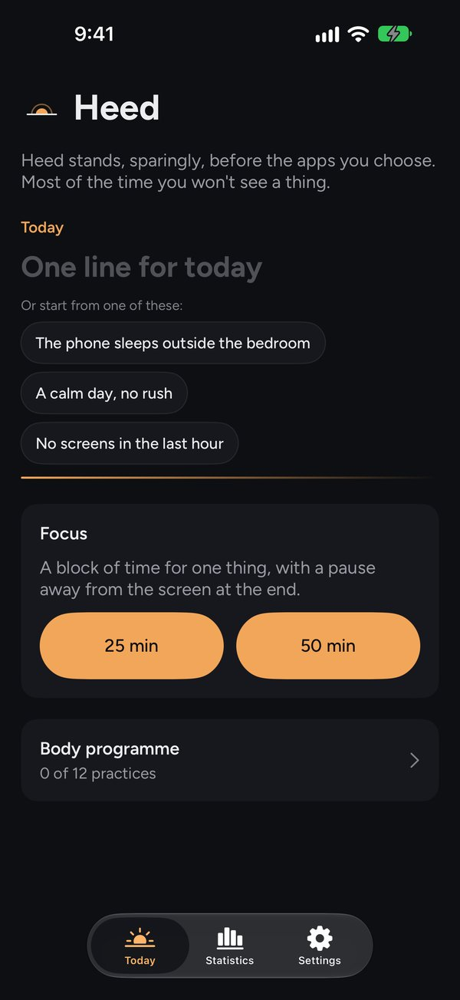
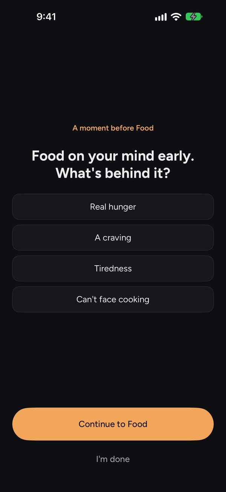
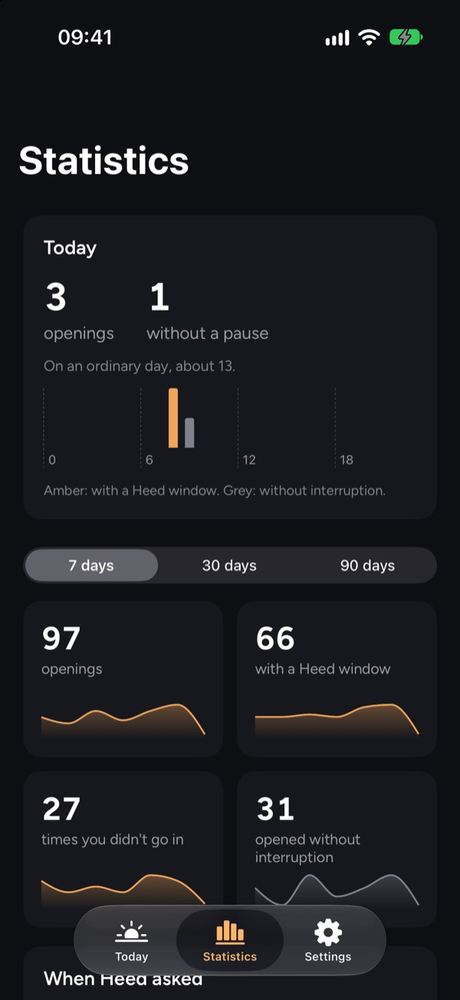

Seize Apps · iOS
Heed
Heed se antepone, con mesura, a las apps que eliges. La mayoría de las veces no verás nada. De vez en cuando, cuando importa, ofrece antes un momento: una pregunta, una respiración, un dato de tu día. Luego eliges tú, y «Seguir» siempre está ahí. No es un bloqueador; es una forma de darse cuenta, para que el móvil sea un poco menos automático, día a día.

Hoy: una línea para el día, y un bloque de foco 
Un momento antes de una app: ¿qué hay detrás? 
Estadísticas: tus aperturas, y las veces que no entraste
Qué hace
Una sola cosa, bien hecha.
- 01 / NOTAR
Un momento que encaja
Ventanas escritas para cada tipo de app (lo que sientes antes de una app de comida a domicilio no es lo que sientes antes de un feed de vídeos) y para la hora, de la mañana a la noche. Doce tipos de momento, de a qué vienes a diez segundos boca abajo. Las aperturas tranquilas solo tienen una pausa de cuatro segundos, y la mayoría pasan sin nada.
- 02 / APRENDER
Lo que te ayuda, en tu dispositivo
Heed se fija en qué ventanas te llevan a «Ya está» y las enseña más a menudo, todo en tu dispositivo. Las estadísticas enseñan tus aperturas por app y por hora, cuánto tardaste en decidir y qué sentías antes de cada app. En las horas que eliges para descansar, y durante un bloque de foco, cada apertura pregunta.
- 03 / EL DÍA
Una línea para hoy
Una línea para el día con ideas para empezar, un cierre breve del día, una revisión semanal que poco a poco pide menos y un programa corporal de cuatro tramos, con los ojos abiertos o cerrados. Heed Pro añade todas las apps que quieras, bloques de foco, el atardecer digital, el programa completo, más estadísticas, widgets y temas de color: un pago único, con prueba gratis de 30 días. Sin rachas, sin puntos, sin culpas.
Privacidad
Tuyo, no nuestro.
Sin cuenta, sin analíticas, sin anuncios. Tus ajustes y lo que escribes se quedan en tu dispositivo y en tu propia cuenta de iCloud; el registro de tus aperturas, y lo que Heed aprende de él, nunca salen del dispositivo. Apple Salud es opcional, está apagado por defecto y es solo de escritura. Heed no puede ver lo que haces en otras apps.
Una app de Seize Apps.